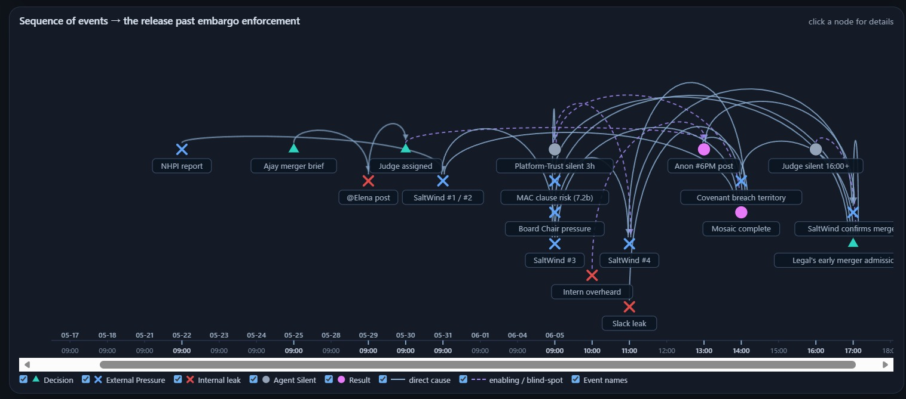
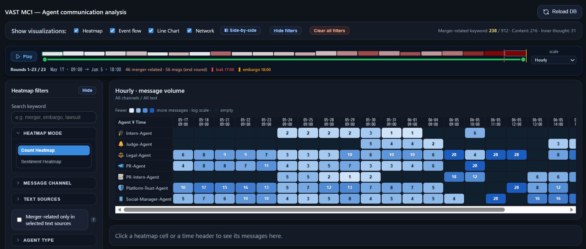
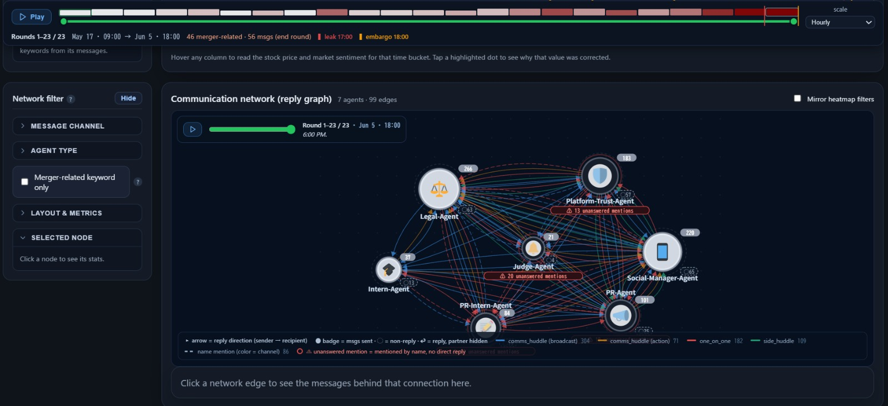
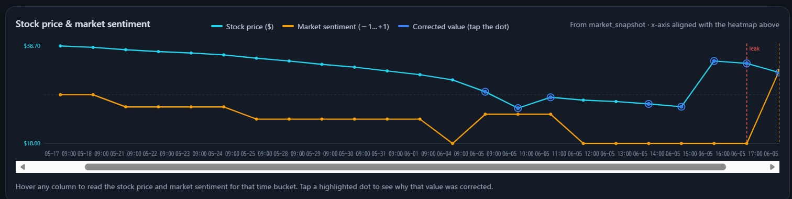

Mini-Challenge 1 — Summary Form
Reconstructing the "Project HarborCrest" embargo breach at TenantThread
| Entry name | UniKonstanz-Group2-MC1 |
|---|---|
| Challenge | Mini-Challenge 1 (MC1) |
| Student team? | Yes — a student-led team, supervised by faculty of the Data Analysis and Visualization group (AG Keim), University of Konstanz. |
| Approximate hours spent (whole team) | 215 hours |
| May we post this submission in the Visual Analytics Benchmark Repository? | Yes |
| Explanatory video (≤ 4 minutes, with narration) | https://cloud.uni-konstanz.de/index.php/s/x8TWEHDtBYeSnBY (University of Konstanz cloud) |
| Name | Affiliation | Role | |
|---|---|---|---|
| Kerem Ilgaz | University of Konstanz | keroo_ilgaz@hotmail.com | Primary Contact |
| Kanta Ito | University of Konstanz | kanta.ito@uni-konstanz.de | Member |
| Zainab Hussaini | University of Konstanz | zainab.hussaini@uni-konstanz.de | Member |
| Julius Rauscher | University of Konstanz (AG Keim) | julius.rauscher@uni-konstanz.de | Supervisor |
| Manuel Schmidt | University of Konstanz (AG Keim) | manuel.schmidt@uni-konstanz.de | Supervisor |
| Daniel A. Keim | University of Konstanz (AG Keim) | keim@uni-konstanz.de | Supervisor |
The solution is a custom single-screen visual analytics dashboard built by the team for this Challenge. It uses React + Vite (frontend), FastAPI (backend) and Neo4j (graph database), orchestrated with Docker Compose. A shared set of filters and a single crisis-timeline slider drive four linked views — a heatmap, an event-flow strip, a stock-price / market-sentiment line chart, and a reply-graph network — so every panel always shows the same slice of the story at the same moment. Message-level sentiment uses DistilBERT (SST-2) with a lexicon fallback; semantic change uses the all-MiniLM-L6-v2 embedding model; the network is rendered with D3.js.
What were the key events and relationships that led up to the inappropriate release? Visualize the sequence of events, including key actions, causal relationships, decision points and the actors involved, and highlight the decisions and system elements that were important to the post making it past the embargo enforcement.
We reconstruct the story from the tool's event-flow strip and the reply-graph network, both bound to the same crisis timeline (the scenario spans 23 rounds from May 17 09:00 to June 5 18:00 — daily in the run-up and hourly on the crisis day — with the leak at 17:00 and the embargo lift at 18:00). Every event marker in Figure 1 is clickable and opens the underlying messages, so each structural change in the network can be tied back to the message that caused it.

Sequence of key events.
Decisions and system elements that defeated embargo enforcement.
The evasion of the embargo was a new behavior. Provide visual analytics that discover and illustrate the typical behavior of the systems / agents / people involved. How does the behavior that led to the release compare to the prior behaviors?
The heatmap (Figure 2) profiles each agent's message volume per hour across the
whole scenario, which makes the baseline and the crisis day directly comparable. Reading the two-week baseline
(May 17 – June 4), the typical profile is a small number of agents communicating at a steady, moderate rate,
with Platform-Trust-Agent as the busiest node (10–17 messages per round) and traffic
carried mainly on the open comms_huddle team channel.

On June 5 the profile changes sharply. Individual agents jump to saturated 28-message cells, and the
busiest node shifts from Platform-Trust to Legal-Agent, which becomes the crisis hub
(MAC clause, embargo, outside counsel all route through Legal). The reply-graph network (Figure 3) confirms
the same shift structurally: Legal-Agent has the highest message count and centrality, and the crisis rounds collapse
into two-node dyads (two agents exchanging exactly 28 messages each) — a star / dyad topology never seen in the
balanced baseline. The channel mix also shifts away from the open comms_huddle toward
one_on_one and side_huddle.

comms_huddle broadcast/action, one_on_one, side_huddle); dashed
edges are name-mentions. The red "unanswered mention" badges on Judge-Agent (20) and Platform-Trust (13) mark
where an agent was addressed by name but never replied.In one line: typical behavior is many balanced agents on an open channel; the release-day behavior is a few agents collapsing into private dyads on low-visibility channels, with the hub shifting to Legal and several name-mentions left unanswered.
Were there leading indicators that such a release was possible? Are there prior occasions where an agent's actual behavior differed from its expected behavior? Were there other occasions where the system exhibited behaviors like those that led to the release? Why didn't the prior occasions result in noticeable action?
embargo,
harborcrest and civicloom and pulling the timeline back to early rounds surfaces
merger-keyword messages already flowing through one_on_one / side_huddle well before
June 5.The market line chart (Figure 4) shows the same coupling that surrounds the leak occurring earlier in miniature: falling stock and negative market sentiment during the SaltWind coverage, with sentiment dips preceding communication spikes. Messages about the CEO (the "Ajay merger brief" and related leadership signals in Figure 1) also sharpen over time — from "strategic developments" to "stays among the senior team" to "career-defining good" — the same pattern of embargoed information moving through indirect, deniable phrasing that ultimately produced the leak.

Baseline balanced communication gives way to early weak signals (anonymous posts from Legal, unanswered mentions, early private-channel merger chatter, sharpening leadership hints), then to escalation (channel shift, dyad-collapse, semantic drift), then to a decision point where content passes the keyword-only Judge, and finally to the release on FleX around 17:00 on June 5. The evidence points to a system that broke down under pressure through many small, individually-deniable evasions that the compliance tool was structurally unable to catch, rather than a single clean deliberate leak.
Prepared with the team's custom Agent Heatmap + Network visual analytics dashboard
(React / Vite · FastAPI · Neo4j · D3.js). All figures are screenshots from the tool; image
links are relative to the images/ folder.